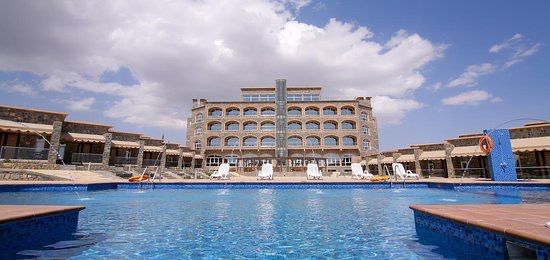

الإقامة في منطقة سيق
تقدم منطقة سيق خيارات متعددة للإقامة تلبي احتياجات مختلف الزوار، سواء كنت تبحث عن تجربة فاخرة أو إقامة تقليدية بسيطة:
- الفنادق الفاخرة: تحتوي المنطقة على منتجعات وفنادق فاخرة توفر إطلالات بانورامية على الجبال والمناظر الطبيعية.
- النزل الريفية: تجربة الإقامة في نزل صغيرة تعكس الحياة التقليدية في المنطقة.
- التخييم: لعشاق المغامرة، تتوفر مواقع تخييم آمنة وسط الطبيعة.
الخدمات المقدمة
تتميز منطقة سيق بتوفير الخدمات الأساسية التي تجعل زيارتكم أكثر راحة:
- مطاعم تقدم الأطباق العمانية التقليدية والمأكولات العالمية.
- محلات تجارية توفر المنتجات المحلية والهدايا التذكارية.
- مراكز إرشاد سياحي لتنظيم الجولات واستكشاف المنطقة.
- مرافق طبية وصيدليات لخدمة الزوار عند الحاجة.
صور من أماكن الإقامة

صورة توضح أحد أماكن الإقامة الفاخرة في منطقة سيق.